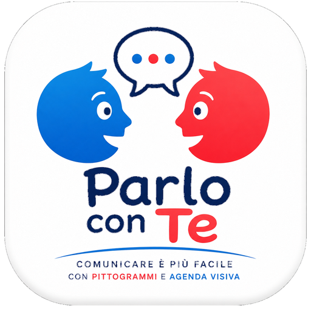
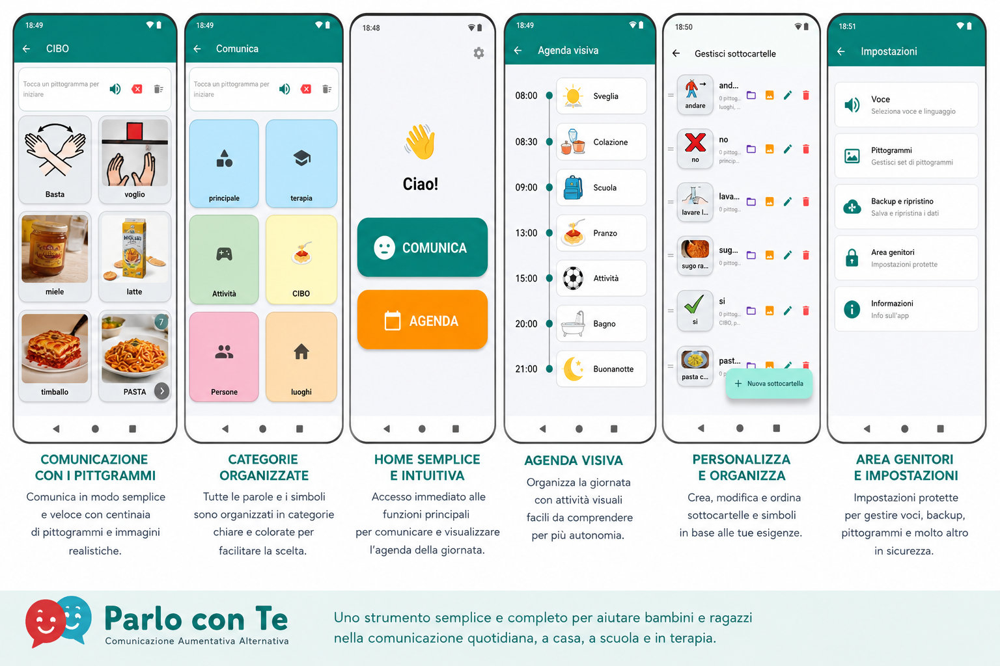

💬
Comunicazione con pittogrammi
Comunica attraverso pittogrammi organizzati in categorie e sottocartelle, scegliendo rapidamente ciò che vuoi esprimere.

Prova l'appComunico CAA – Parlo con Te è un'app pensata per rendere la comunicazione quotidiana più semplice, chiara e accessibile attraverso pittogrammi, immagini, voce e strumenti visivi.
L'app è attualmente disponibile attraverso il programma di test di Google Play.
Pensata per accompagnare bambini e ragazzi nella comunicazione, nell'organizzazione della giornata e nello sviluppo dell'autonomia attraverso strumenti visivi semplici e intuitivi.
Un'interfaccia chiara, pulsanti grandi e strumenti pensati per rendere più semplice l'utilizzo quotidiano.
Comunica attraverso pittogrammi organizzati in categorie e sottocartelle, scegliendo rapidamente ciò che vuoi esprimere.
Organizza i pittogrammi in categorie e sottocartelle personalizzabili, per trovare più facilmente le parole e le attività.
I pittogrammi possono essere pronunciati attraverso la sintesi vocale, rendendo la comunicazione più immediata.
Organizza la giornata attraverso una sequenza visiva di attività. Una volta terminata un'attività, il bambino può farla scorrere via e passare alla successiva.
Un timer visivo aiuta a comprendere meglio il trascorrere del tempo durante le attività quotidiane.
Suddividi le attività in semplici passaggi visivi, aiutando il bambino a seguire una sequenza fino al completamento dell'attività.
L'interfaccia e i contenuti supportano italiano, inglese, spagnolo, francese, tedesco, portoghese e cinese semplificato.
Un'area dedicata permette di gestire categorie, sottocartelle, agenda, voce, lingua, dimensione dei riquadri, profilo e backup.
I dati dell'app possono essere salvati e ripristinati attraverso gli strumenti disponibili nell'area genitori.

L'agenda visiva permette di rappresentare le attività della giornata in modo ordinato e immediatamente comprensibile.
La funzione Autonomia Passo Passo permette di costruire attività composte da più passaggi visivi.
Il timer visivo rappresenta il trascorrere del tempo in modo immediato, aiutando il bambino a comprendere quanto manca alla fine di un'attività.
L'area dedicata ai genitori raccoglie gli strumenti necessari per configurare l'app e adattarla alle esigenze quotidiane.
La libreria dei pittogrammi è integrata nell'app e permette di organizzare e utilizzare i simboli nelle diverse funzioni.
I simboli sono organizzati per categorie e parole chiave per facilitarne la ricerca.
I pittogrammi possono essere utilizzati nell'agenda e negli strumenti dell'app mantenendo il collegamento con la libreria.
La selezione di un pittogramma può essere accompagnata dalla sintesi vocale per supportare la comunicazione.
L'app è stata aggiornata per supportare più lingue, permettendo di utilizzare l'interfaccia in base alla lingua scelta nell'area dedicata.
Puoi partecipare al test di Comunico CAA attraverso Google Play.
Comunico CAA è progettata per utilizzare i dati dell'app direttamente sul dispositivo secondo le funzionalità previste dall'applicazione.
L'app non richiede la creazione di un account per il suo normale utilizzo e non utilizza pubblicità.
Per maggiori informazioni è possibile consultare la Privacy Policy completa.
Leggi la Privacy Policy →